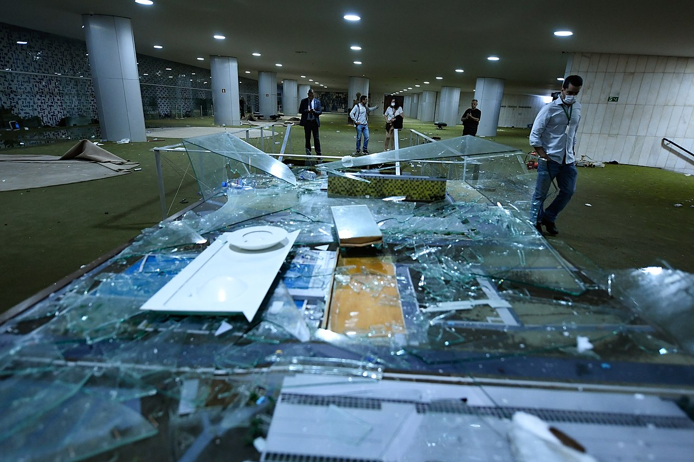
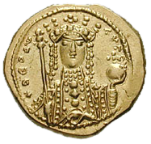

From today's featured article

Combe Hill is a causewayed enclosure, near Eastbourne in East Sussex, on the northern edge of the South Downs. It consists of an inner circuit of ditch and bank, incomplete where it meets a steep slope on its north side, and the remains of an outer circuit. Causewayed enclosures were built in England from shortly before 3700 BC until at least 3500 BC; their purpose is not known. The enclosure has been excavated twice: in 1949, by Reginald Musson; and in 1962, by Veronica Seton-Williams, who used it as a training opportunity for volunteers. Charcoal fragments from Musson's dig were later dated to between 3500 and 3300 BC. Musson also found a large quantity of Ebbsfleet ware pottery in one of the ditches. Seton-Williams found three polished stone axes deposited in another ditch, perhaps not long after it had been dug. The site is only 800 metres (870 yd) from Butts Brow, another Neolithic enclosure; both sites may have seen Neolithic activity at the same time. (Full article...)
Recently featured: Osbert ParsleyThird Punic War
featured article • Archive By • email More• featured article • sAbout
Did you know ...
- ... that when baker Ruby Tandoh (pictured) publicly came out, she mocked critics who suggested that she had romanced a male contest judge?
- ... that the San Diego Trough Fault Zone can produce an earthquake that devastates the counties of Los Angeles, Orange, and San Diego, California?
- ... that Ravenshoe has been noted for its passages dealing with the Charge of the Light Brigade, a failed military action during the Crimean War?
- ... that the software Obsidian was created by just two developers during the COVID-19 pandemic?
- ... that Willi Ritschard was not amused when he had to attend a royal banquet for Queen Elizabeth II on International Workers' Day?
- ...that creating Vennture Brew Company involved 18 months of construction and $22,000 in crowdsourced funds?
- ... that abused Overseas Filipino Workers accused the former chargé d'affaires of the Philippine embassy in Damascus of neglecting them while he was regularly partying with handsome Syrians?
- ... that gas lighting inspired Stephen Gunzenhauser to start a classical music festival?
Recently featured: Osbert ParsleyThird Punic WarAlfred Russel Wallace
featured article • Archive By • email More• featured article • sAbout
In the news
- Supporters of former Brazilian president Jair Bolsonaro invade the National Congress (damage pictured), the Supreme Federal Court and the Palácio do Planalto.
- Michael Smith wins the PDC World Darts Championship.
- Croatia adopts the euro and joins the Schengen Area.
- Pope Emeritus Benedict XVI dies at the age of 95.
- Brazilian footballer Pelé dies at the age of 82.
- Mahsa Amini protestsPeruvian protestsRussian invasion of Ukraine Recent deaths: Shen Lyu-shunDanny KaleikiniSiddeshwar SwamiFrank McGarveyMartin DavisAndrew Downes
Nominate an article
On this day
- Byzantine coin depicting Theodora Byzantine coin depicting Theodora 1055 – Theodora Porphyrogenita (pictured) became the sole ruler of the Byzantine Empire after the death of her brother-in-law Constantine IX Monomachos.
- 1787– German-born British astronomer William Herschel discovered two Uranian moons, later named Oberon and Titania by his son John.
- 1863-American Civil War:The Battle of Arkansas Post concluded with the Union Army capturing a fort from Confederate forces near the mouth of the Arkansas River.
- ... that the software Obsidian was created by just two developers during the COVID-19 pandemic?
- ... that Willi Ritschard was not amused when he had to attend a royal banquet for Queen Elizabeth II on International Workers' Day?
- ...that creating Vennture Brew Company involved 18 months of construction and $22,000 in crowdsourced funds?
- ... that abused Overseas Filipino Workers accused the former chargé d'affaires of the Philippine embassy in Damascus of neglecting them while he was regularly partying with handsome Syrians?
- ... that gas lighting inspired Stephen Gunzenhauser to start a classical music festival?
featured article • Archive By • email More• featured article • sAbout